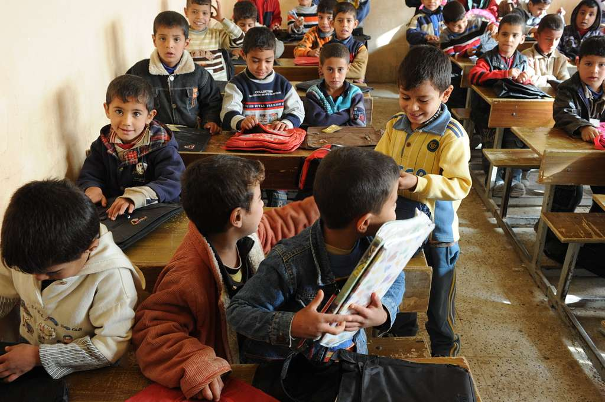
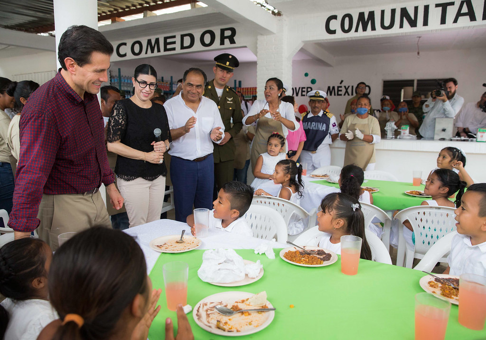
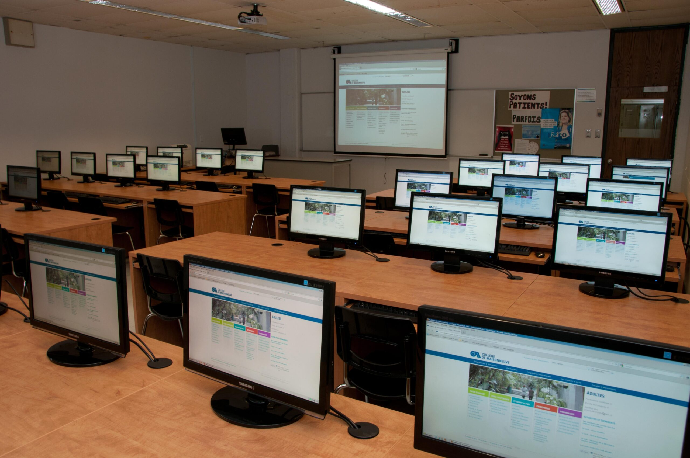

Nuestros Programas
Estos son algunos de los programas de nuestra organizacion:


Programa "Mesa compartida"
Iniciativa de asistencia alimentaria que brinda viandas semanales y organiza jornadas comunitarias de alimentación.

Programa "Conectados"
Capacitación en habilidades digitales básicas (uso de PC, internet, herramientas laborales).
Programa “Acompañar"
Espacio de apoyo escolar para niños y adolescentes, enfocado en reforzar contenidos educativos y generar hábitos de estudio.
Dirigido a: Niños y jóvenes de 6 a 17 años en contextos vulnerables.
Como participar:
Podes participar como voluntario (docente o estudiante), donando utiles escolares, o inscribiendo a un beneficiario.
Programa "Mesa Compartida"
Iniciativa de asistencia alimentaria que brinda viandas semanales y organiza jornadas comunitarias de alimentación.
Dirigido a: Familias en situación de inseguridad alimentaria.
Como participar:
Podes participar donando alimentos, siendo voluntario en la cocina y distribución, o con apoyo económico.
Programa "Conectados"
Capacitación en habilidades digitales básicas (uso de PC, internet, herramientas laborales) para mejorar la empleabilidad.
Dirigido a: Jóvenes y adultos sin acceso o conocimiento tecnológico.
Como participar:
Podes participar como instructor voluntario, donando equipos o inscribirte a cursos.